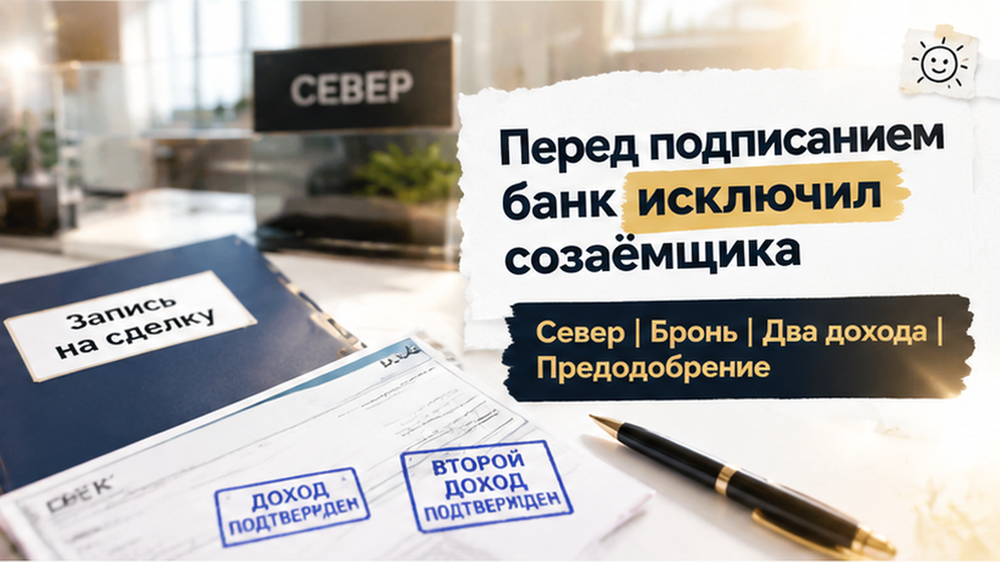
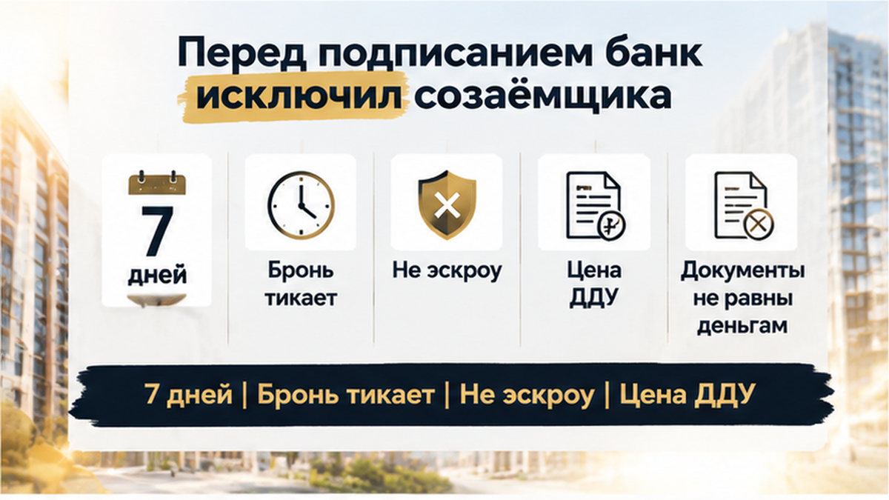
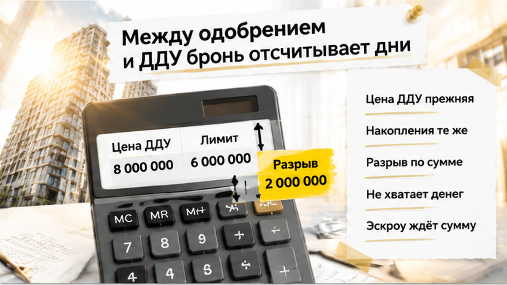
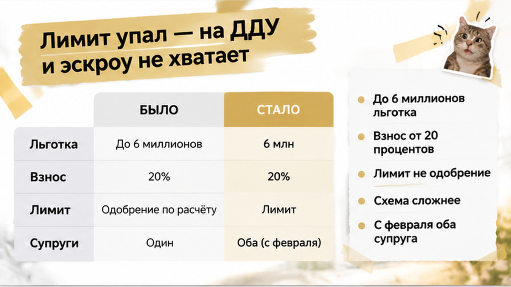
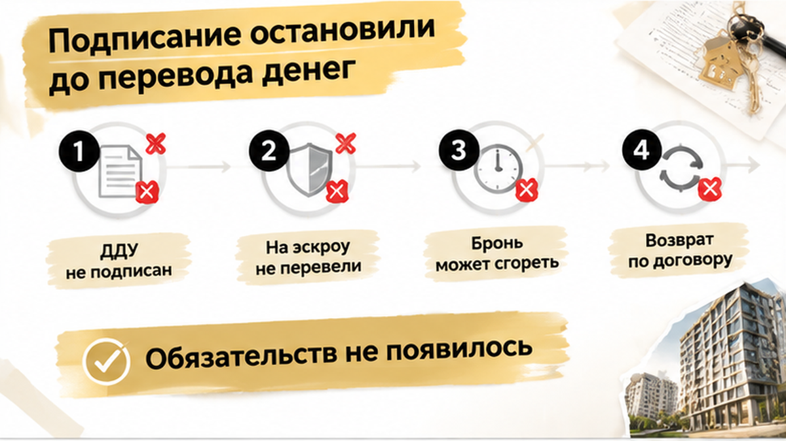
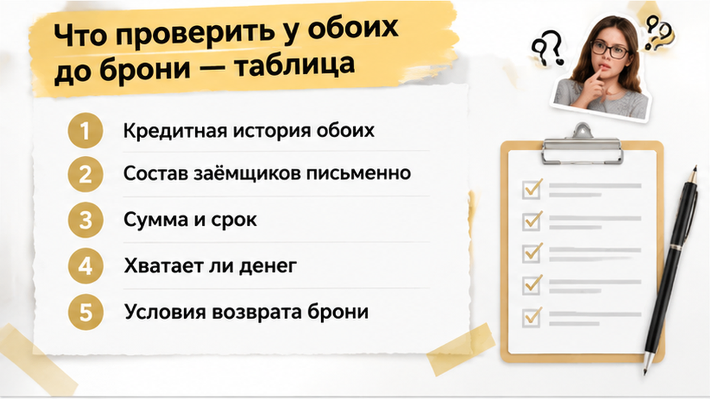

7 дней между одобрением ипотеки на двоих и подписанием ДДУ — договора на покупку будущей квартиры — может изменить весь расчёт покупки. Семья с детьми выбрала новостройку на севере Тюмени, внесла плату за бронь и приехала готовить сделку с понятной арифметикой: часть суммы дают собственные накопления, остальное — банк. Кажется, всё чисто: оба дохода учтены, квартира выбрана, документы движутся. Но перед подписанием банк пересмотрел состав заёмщиков, исключил одного супруга, и одобренной на одного дохода суммы уже не хватило на прежнюю цену ДДУ. В этот момент вопрос звучит уже не «успеем ли подписать», а «есть ли чем полностью оплатить договор».
Я Святослав Шакин, The Риэлтор, Тюмень. Разбираю покупки новостроек через документы и деньги, а не через обещание «банк всё одобрит». Такие разборы публикую в Telegram и MAX — чтобы вопросы появлялись до подписи, а не после неё.
Для семьи предварительное одобрение с учётом двух доходов сразу превращается в бюджет. Накопления и обещанный кредит покрывают цену квартиры, поэтому платная бронь выглядит естественным шагом: удержать вариант, пока готовятся документы. Ошибка начинается не с выбора квартиры, а с уверенности, что банковская часть расчёта уже окончательная.
Созaёмщик — не человек, который просто добавил справку о зарплате ради большей суммы. Он отвечает за кредит вместе с основным заёмщиком. Банк проверяет его доходы, долги, просрочки и кредитную историю: важен не только общий заработок супругов, но и результаты проверки каждого.
С 1 февраля 2026 года в семейной ипотеке супруги должны участвовать в одном кредитном договоре как созaёмщики. Исключения предусмотрены, если супруг не является гражданином России или заёмщик участвует в военной ипотеке. Поэтому исключение супруга — не техническая правка: нужно выяснить, соответствует ли оставшийся состав условиям программы.
Предварительное решение не гарантирует выдачу кредита на прежних условиях. До кредитного договора банк может повторно проверить супругов, объект и документы застройщика. «Вашу заявку одобрили» и «банк подтвердил финансирование именно этой покупки в таком составе» — разные сообщения. Между ними остаются этапы, которые нельзя заменить устным «всё готово». Подробнее — цепочка от одобренной семейной ипотеки до расчётов за новостройку.

У семьи появляются два разных срока. Банк продолжает проверку, а договор бронирования отсчитывает свои дни. Неделя или больше до подписания ДДУ не означает, что квартира будет ждать на любых условиях. При этом отказаться психологически сложнее: плата внесена, выбранный вариант хочется сохранить.
Плата за бронь — отдельные деньги застройщику или агенту на условиях договора бронирования, а не средства на эскроу, специальном счёте для расчётов за квартиру. Автоматического возврата при проблемах с ипотекой обещать нельзя. Срок удержания квартиры, порядок возврата и последствия отказа нужно искать в договоре брони.
Готовность документов легко перепутать с готовностью денег. Цена в проекте ДДУ не обязывает банк выдать недостающую сумму. Если расчёт изменился, его нужно собрать заново до подписи: отвечать за договор будет семья.

В день подписания, в офисе застройщика, выясняется главное: банк убирает второго супруга из предварительного одобрения и пересчитывает доступную сумму по доходу одного.
Квартиру уже выбрали, за бронь заплатили, оставались подписи. Но банковская проверка ещё не закончилась: первоначальное «одобрено» не означало обязательства выдать именно такую сумму.
По одному сообщению нельзя установить причину пересмотра. При повторной проверке могут иметь значение просрочки, действующие кредиты, недостаточно подтверждённый доход или уже оформленная льготная ипотека. Банк также оценивает долговую нагрузку — сколько из заработка уходит на платежи по долгам.
Без дохода одного супруга прежний лимит может оказаться неподъёмным по банковским требованиям. «Мы справимся» и «банк подтверждает сумму» — не одно и то же.
С 1 февраля 2026 года в семейной ипотеке супруги должны участвовать вместе как созаёмщики. Исключения предусмотрены, если супруг не гражданин России или заёмщик участвует в военной ипотеке.
Поэтому я бы разделил два вопроса: сколько банк теперь готов дать и по какой программе возможно оформление. Созaёмщик отвечает за кредит вместе с основным заёмщиком, а не просто добавляет справку о зарплате.
Это отличается от ситуации, когда перед ДДУ меняется ставка: здесь сначала нужно разобраться с составом заёмщиков и доступной суммой.

У застройщика остаётся проект ДДУ — договора на покупку будущей квартиры — с прежней ценой. Семейные накопления тоже не увеличились. До пересмотра собственные деньги и кредит покрывали покупку, после него появляется разрыв.
Это уже не вопрос удобного платежа: денег на полную оплату договора не хватает. Перед подписанием ДДУ нужно подтвердить источник всей суммы.
Лимит семейной ипотеки для Тюмени — до 6 миллионов рублей по льготной ставке, первоначальный взнос — от 20%. Но верхний предел программы не равен сумме, которую одобрят конкретной семье.
Даже при накопленной пятой части стоимости банк может выдать меньше оставшейся суммы. Комбинированный кредит, где часть денег идёт на рыночных условиях, нужно отдельно согласовать, а дохода должно хватить на новые платежи.

Эскроу — специальный счёт для расчётов за квартиру, а не источник дополнительных денег. Цена в ДДУ, собственный взнос и окончательно согласованная сумма банка должны сойтись.
В разборе пути от одобренной семейной ипотеки до расчётов за новостройку важна последовательность: финальная проверка, кредитный договор, подтверждение суммы и перевод денег на эскроу.
Сейчас семье предлагают подписать договор, источник полной оплаты которого уже не подтверждён. А срок брони продолжает идти независимо от банковского пересчёта.
На этом месте подписание останавливается. Семья не подписывает ДДУ — договор на будущую квартиру — и не переводит деньги на эскроу. После пересчёта кредита собственных средств уже недостаточно, чтобы оплатить выбранную новостройку.
Подпись под прежней ценой эту разницу не закроет. Пока нового решения банка нет, у семьи нет подтверждённого источника полной оплаты.
Последствия всё же есть: срок брони может закончиться, квартиру придётся искать заново или пересобирать ипотечную схему. Возврат платы за бронь решается по договору бронирования. Эти деньги не лежат на эскроу, поэтому банковский отказ сам по себе не определяет порядок возврата.
Но главное решение семья приняла вовремя: ДДУ не подписан, деньги за квартиру не перечислены. Обязательство оплатить её без подтверждённого источника денег не появилось.

Банк неделю держал одобрение «на двоих», а перед ДДУ созaёмщика исключили. Вы бы подписали договор на оставшийся лимит или забрали бы бронь?

Исключение супруга из заявки ещё не доказывает, что семейная ипотека сохранилась. У банка нужно выяснить, на какой программе и с каким составом заёмщиков возможна выдача. Исключения из правила об участии обоих супругов предусмотрены, если супруг не является гражданином России или заёмщик участвует в военной ипотеке.
Проверять стоит не только сумму: кредитная история, долги, подтверждённый доход и действующая льготная ипотека каждого могут повлиять на всю заявку. До брони нужно сверить исходные сведения, а перед ДДУ — актуальные условия.
| Что сверяем | До оплаты брони | Перед подписанием ДДУ |
|---|---|---|
| Обоих супругов | Кредитную историю, доходы, платежи по долгам, сведения ФССП и действующие льготные ипотеки каждого. | Не изменились ли сведения, которые банк учитывал при предварительном решении. |
| Решение банка | Состав заёмщиков, программу, сумму кредита, первоначальный взнос и срок действия — письменно или в личном кабинете. | Актуальное подтверждение состава заёмщиков и суммы. Если кого-то исключили — основание и возможность сохранить программу. |
| Деньги на квартиру | Хватает ли одобренного кредита и собственных средств на выбранную цену, а не только на минимальный взнос. | Совпадают ли кредит плюс собственные деньги с ценой ДДУ и суммой для эскроу. |
| Условия бронирования | Срок, получателя платы и условия возврата при проблемах с ипотекой. | Можно ли продлить бронь и что произойдёт, если семья не подпишет договор в назначенный день. |
Для Тюмени льготная часть семейной ипотеки ограничена 6 миллионами рублей, а первоначальный взнос начинается от 20%. Но минимальный взнос и сумма, которой хватит именно этой семье, — разные вещи. Если банк одобрил меньше, разницу придётся закрывать собственными деньгами.
Комбинированный кредит с частью долга по рыночной ставке нужно отдельно согласовать, а дохода семьи должно хватить на новые платежи. Само слово «одобрено» не заменяет проверку всей цепочки от решения банка до ДДУ и эскроу.
Разбираю такие развилки при покупке новостроек в Тюмени в Telegram и MAX. Можно сохранить разбор и вернуться к нему перед разговором с банком и оплатой брони.
Моя позиция простая: состав заёмщиков и лимит проверяем до брони, затем ещё раз перед подписанием ДДУ. Если расчёт строился на двух доходах, не переводим деньги на эскроу, пока банк не подтвердил финальное решение на двоих и суммы не сошлись с договором.
Новостройки в Тюмени покупают не потому, что проверки отменили, а потому, что договор посмотрели до денег. Остановить подписание при нехватке средств — значит сохранить возможность выбрать следующий шаг, а не догонять уже подписанное обязательство. Это и есть та самая пауза до аванса, о которой я говорю в каждом разборе.